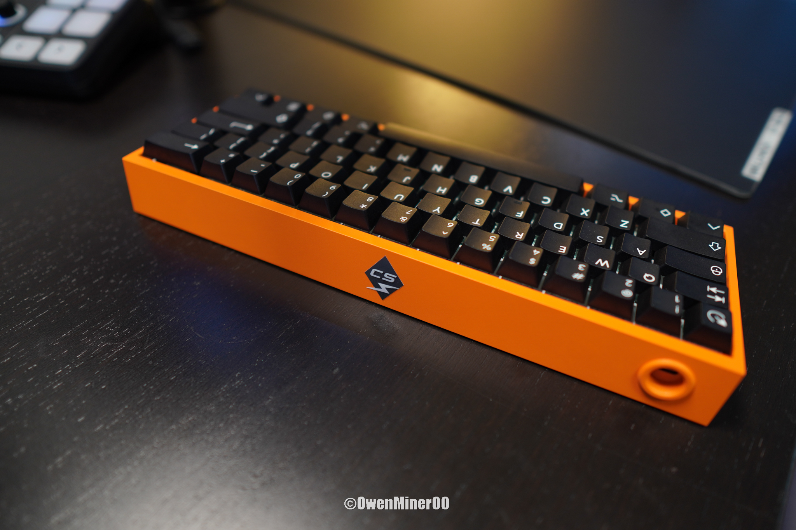
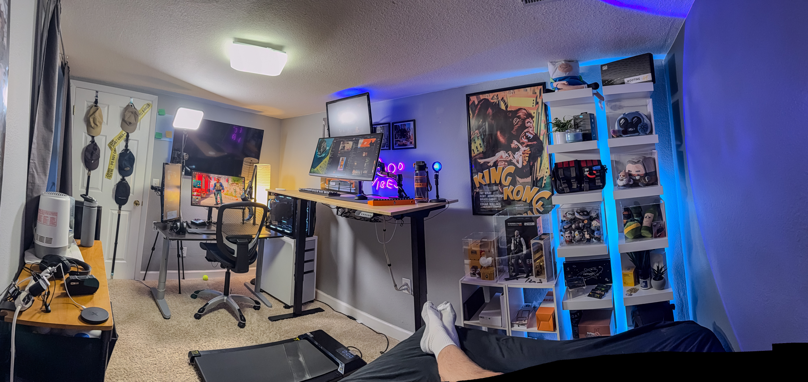

OwenMinerCS.com


OwenMinerCS.com

Minimize View To:
Show All:
Resolution: 2560x1440p
Refresh Rate: 480hz
Picked up an ASUS ROG Swift OLED PG27AQDP 480Hz 1440p OLED in December 2024. It’s primarily used for Counter-Strike 2, but I’ll definitely be playing most of my games on it.
So far, I’ve really enjoyed it. There’s a huge difference between this monitor and my previous 280Hz 1080p display.
The motion clarity and response times are insane. The higher pixel density is also incredibly useful in CS2 for long-range duels.
On most maps in CS2, with a 4090 + 7800X3D at native resolution, FPS averages between 500-700 FPS (depending on the map and settings). When the monitor dips below 480Hz, it’s not very noticeable. Occasionally, there are some minor motion artifacts due to frame rate fluctuations, but the response time is fast enough to not affect gameplay. If your PC OR wallet isn’t ready for this monitor, a 360Hz 1440p OLED could get you close to this level of performance for a fraction of the price, though 480Hz still provides a small edge in competitive play.
I have tried out G-Sync and ELMB but prefer both of them off as it just feels better without them.
If anyone plays on stretched resolution with full-screen windowed mode, it can be difficult to get the monitor to consistently stay at a custom resolution due to issues with DSC. It is possible by disabling DSC, creating a custom resolution in the NVIDIA 3D settings, then re-enabling DSC. However, any time you turn off the monitor, you will have to set the resolution again. To avoid DSC altogether, you will need a GPU with DisplayPort 2.1, which is included on most 50-series NVIDIA cards but is harder to find on other GPU models.
I tend to change my in-game resolution quite frequently because I’m a placebo settings changer. As of March 2025, I’m playing in 16:10 fullscreen, which is running very smoothly. When I first bought the monitor, I was using the native resolution (2560x1440p), but I felt like switching it up and trying stretched for a while. Personally, I have no real resolution preference—it just depends on what I’m feeling that day, and I can usually adjust to a new resolution on the same day I change it. I would say half of my hours are on 16:10 and the other half on other resolutions like 16:9, 4:3, and 16:9 stretched on my ultrawide monitor.
This monitor also takes up TWO internal GPU ports, leaving you with three external GPU ports (DisplayPort, HDMI, etc.). If you use four or more monitors, you will need to use your integrated graphics for one monitor or install another GPU.
I was able to get this monitor on sale for $995.72, including taxes and shipping. I waited for over a year and saved accordingly, using my end-of-year bonus to afford this monitor. Normally, with tax, it would have cost $1,068.93, so I saved $73.21 in total from the sale.
Now, the most important question: is this monitor worth the price? This monitor is on the bleeding edge of technology and will give you a competitive advantage over opponents through the ability to react a few milliseconds quicker. Better motion clarity, response time, and pixel density all contribute to improved reaction speed with this monitor. I spend a good chunk of my day in front of this monitor and enjoy trying out the newest tech. If you have a PC capable of powering this monitor, use that PC for highly competitive games for hours a day, and have some extra money to spare, this monitor is definitely worth experiencing.
Alternatively, if your PC or budget isn’t ready for this monitor, a 360Hz 1440p OLED could get you close to this level of performance at a fraction of the cost.
Overall, if you're impatient and want peak performance ASAP, buy this monitor. Otherwise, in 1-2 years, this monitor should go on sale, and more competition should emerge at lower prices.
Resolution: 3440x1440p
Refresh Rate: 60hz
Having an ultrawide monitor is amazing for productivity. Coding, editing videos, and using Photoshop are all much better with the extra screen real estate. Watching movies is also really enjoyable, as many movies with black bars can be stretched to take up the entire monitor. At the time when I purchased it, it was quite expensive, but it was the only ultrawide I could find that could receive a display signal via USB-C and had two USB-3 connectors to work as a USB hub for my laptop. Although I no longer use a laptop as my main computer, this monitor still comes in handy anytime I am not playing video games.
Resolution: 1920x1090p
Refresh Rate: 60hz
Response time: 2ms
I have had two of these 24-inch Asus monitors for over 10 years now. They have been more than been worth it to me. They were my original gaming monitors, and although they were 60Hz, their 2ms response time was quite fast for the time. I have used these monitors as secondary displays for quite a few years now. The brightness and contrast are not as good as they used to be, but they still turn on after many, many hours of use, so I cannot complain!
Modified G Pro Superlight Mouse
I've customized my G Pro Superlight with a hotswap PCB board, TTC 60 million gold switches, a bandaid mod for the side buttons, a weight reduction mod, and Wallhack Obsidian dot skates.
The hotswap PCB works great and is compatible with the stock Superlight scroll wheel. The scroll wheel steps feel much more distinct and less mushy compared to stock. I really enjoy the TTC Gold 60M switches—they feel significantly faster than the stock ones. Having a hotswap PCB is a huge plus since it lets me try different switches anytime without needing to solder.
The bandaid mod involves cutting small pieces of a bandaid and placing them under the side button switches. This improves the feel, making the clicks more responsive and reducing the actuation distance.
For weight reduction, I removed excess plastic using a wire cutter and a handheld rotary tool. I also took out the Powerplay module and trimmed unnecessary plastic around the frame.
I've used stock skates for a few years and tried Tiger Ice skates for a while. Both performed well, but after upgrading to a glass mouse pad, I needed something more durable. The Wallhack Obsidian dot skates feel similar to Tiger Ice in terms of friction, but since they have a much smaller surface area, they glide more smoothly. The Obsidian skates package includes plenty of extra skates, so I’m not too worried about wear and tear.
Also added a magnetic micro usb charger. This plugs into the existing port and allows the mouse to easily conect to a magnetic charger without having to manually align the original charger. This makes it extremly easy to plug in and encourages me to plug in my mouse when not using it. It does add around a gram of weight to the front of the mouse but the conviniece of easily pluggin in the mouse is more than worth the added weigth.
I'm using the stock battery. I really considered swaping ou the batter for a smaller and lighter alternative but I really enjoyed only having to charge the mouse like once a week, so decided to stick with the stock battery.

So far, this glass mousepad has done everything I need it to do.
It might sound a little crazy, but the main reason I got this mousepad is because of how easy it is to clean. A traditional mousepad is a magnet for dust and grime, which I have found to seriously affect the consistency of my aim. A glass mousepad is extremely easy to wipe off with a microfiber cloth, and I always keep a few handy next to my desk.
The base of this mousepad is great—it does not move around at all and will not damage the desk.
I do think that the "performance" of a glass mousepad is overrated and that the skates on your mouse itself have a larger effect on the speed and friction while moving your mouse.
One annoyance that I have heard other people talk about, and that I agree with, is how loud it is when swiping with your mouse. It may seem ridiculous to complain about the sound of a $120 mousepad, but with open-back headphones, it is loud enough to cover up some important but quiet footsteps in Counter-Strike.
Overall, I think that this mousepad was worth the high price because of its easy-to-clean surface, and it shouldn't need to be replaced as often as a traditional mousepad.
I have had this Wooting 60HE since late spring 2023 and absolutley love it. I have spent way too much time and money trying out different mods. Full parts list and breakdown on the Keyboard tab!

I have used three different monitor arms, all of which are desk clamp-mounted.
My favorite monitor arm is a gas spring arm. I own the discontinued Amazon Basics model, which, at the time of purchase, was the cheapest available pneumatic arm. Nowadays, these types of arms are much more affordable. It allows you to position your monitor however you want, with no major constraints on height, depth, or rotation.
I also have an extra-tall monitor arm that allows for 36 inches of height. It comes with three detachable sections and is relatively sturdy for its height. There is some wobble, but that is to be expected when mounting a monitor so high.
The remaining two mointor arms are affordable arms that allow swivel, tilt and rotation but not height adjustment. These arms have held up great for the price, with only a little sag over a few years but otherwise have outerformed my expectations
I have had these headphones since 2023 and really enjoy them. They perform really well with musci and gaming. I would suggest having something other than your pc to power them. For years I used a Sound Blaster Z internal amp/dac, but since purchasing the streamer x use it to power these headphones.
These headphones are open back which are great for sound quality but you can hear everything in the outside world through them, which is a bit annoying if you have noisy neighbors. Also if your volume is too high and your microphone is too close, your headphones audio will be picked up by your microphone.
So far, the Rode Streamer X accomplishes what it needs to do.
It functions as an amp for the Shure SM7B microphone, providing power and a gain knob.
It also features a headphone volume knob, which is really helpful for adjusting the volume.
One of the main deciding factors in purchasing this device was the HDMI capture card, which allows me to connect my Sony ZV-E10 mirrorless camera.
A lot of my teammates get a kick out of the voice effects, such as the chipmunk and robot voices.
Although it does what I need it to do, the software is definitely a struggle to work with. Rode Central does not save your settings after restarting your PC unless you replace the file generated by the program, and sometimes the HDMI capture card struggles to pick up the signal from my mirrorless camera.
The Elgato Wave Mic Arm is very high quality. It has more than enough lift to hande the shure SM7b and actually needs the included counter weight to keep the arm from raising on it's own.
I prefer to have my mic mounted high up and out of the way of the desk's suface. Many people prefer low profile mic arm's but having a 7 foot wingspan, I could see myself bumbing into the low profile arm, as well as knocking over beverages since it is mounted so low.
The cable managment channels included on the top and back of the arm are really clean and super easy to open incase you need to adjust or swap out your microphone cable.
i'm using the included hiehgt spacer as well, so my arm is mounted at its max height and I have never run into any issues with it being in the way.
As of right now I have zero complain'ts about this mic stand and have found it well worth the money
I have been using this camera for a few years now and it does it's job well. It is the main camera in all of my youtube content and I plan to use it for the forseeable future.
I was originally using the included kit lense but it did not perform very well indoors, which is where I primarily use this camera. With the kit lense you had to increase the ISO to a very high setting to see anything, but this would result in very grainy videos/photos.
I eventually picked up a Sigma 16mm f/1.4 lense, and it performed really well in low light conditions
For quite a while I used the included "webcam" feature on the zve10. This allowed you to plug the camera into your computer with a usb-c cable and use it as a webcam. This feature worked pretty well but could only output at 1080p
I upgraded to an elgato cam link 4k that allows the zve10 to output signa through its min hdmi cable for a while. When I purchased the Rode Streamer X, I no longer needed the elgato cam link, since the stremer x had a capture card I could use
This key light serves a couple of really important purposes for me.
The main purpose of this key light is to provide artificcial day light for purposes of energy and focus. I'm a big fan of the Huberman Lab Podcast and one major point he hammers home is getting adaqute light in your eyes to stimulate your bodies natural response to be awake.
Of course the second purpose of this key light is to provide lighting for photos/vidoes and it does a really good job
The Godox ES45 comes with a portable remote with knobs to control the brightness and color temperature that sits on my desk and is powered by micro usb.
I also have this light setup with a wifi enabled outlet that automatically turns on at the same time of my alarm to wake up. Having a bright light is very helpful for waking up in the morning.
So far, I have really enjoyed this desk.
At its max height, it works well with a walking pad, and I'm very tall at 6'7".
Before purchasing this desk, I heard some reviews say that there was some wobble at its max height, but so far, I have not found it to be an issue, and it does not wobble much at all.
It is really nice to be able to adjust the height when I'm eating food, as I like to have it a bit higher in case anything falls off the fork.
The desk lets you set four different height buttons. My settings are as follows:
My black desk is an old IKEA desk that is over a decade old. It is quite sturdy but they no longer sell this model. I have also used the "thicker" IKEA desk models, bu they are hollow on the inside and are about as sturdy as carboard.
This treadmill has been extremely useful during the winter. It gets way too cold where I live, so having the option to hop on this walkpad for a few miles a day helps keep me active.
I tend to walk on it when doing light productivity tasks, watching YouTube, or a movie.
I like to set it on its lowest setting if I'm doing some productive work, but if I am just watching a movie, I will put it somewhere between 1.5 and 2.2 mph, which, at the higher end, can work up a sweat after a mile or two.
During the winter, I would try to get five miles a day throughout the day, usually in increments of 1-2 miles.
Overall, I think this is one of my best purchases, as it significantly increases activity levels and has more than paid for itself!